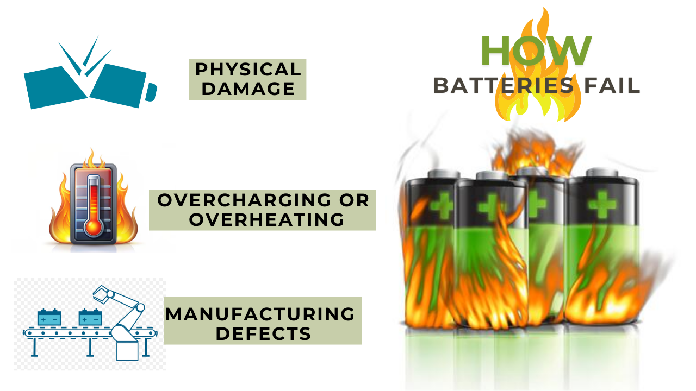
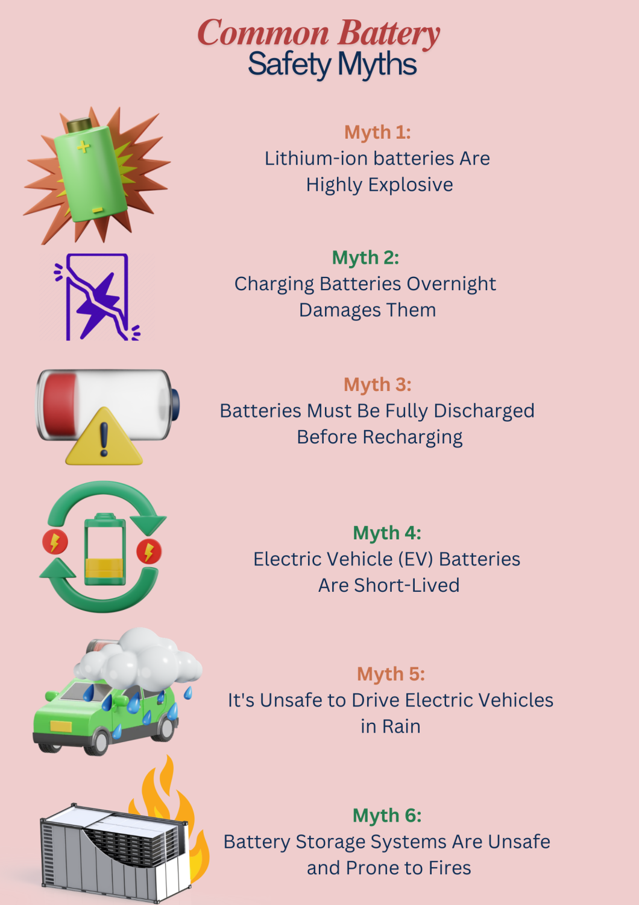

Introduction
As the use of lithium-ion batteries becomes increasingly widespread in everyday devices and electric vehicles, misconceptions about their safety persist. Understanding the facts behind these myths is crucial for ensuring safe usage and handling. Here, we debunk some of the most common myths surrounding battery safety.
How Batteries Fail
While generally safe, lithium-ion batteries can fail due to:

- Physical Damage: Dropping or puncturing can cause internal short circuits.
- Overcharging or Overheating: Excessive heat damages components, increasing fire risks.
- Manufacturing Defects: Rare but possible, affecting performance and safety.
Common Battery Safety Myths
Myth 1: Lithium-ion batteries Are Highly Explosive
Fact: While it is true that lithium-ion batteries can pose risks, they are designed with multiple safety features to prevent explosions. Incidents of battery fires are rare and typically occur due to external factors such as physical damage or improper charging practices. Modern batteries come equipped with advanced management systems that monitor temperature and voltage, significantly reducing the likelihood of dangerous failures.
Myth 2: Charging Batteries Overnight Damages Them
Fact: A common belief is that leaving lithium batteries plugged in overnight harms their lifespan. However, contemporary lithium batteries are built with sophisticated charging management systems that prevent overcharging. As a result, charging overnight is generally safe and does not adversely affect battery health. Regular top-ups are actually beneficial and can enhance battery longevity.
Myth 3: Batteries Must Be Fully Discharged Before Recharging
Fact: This myth stems from an outdated concept known as the "memory effect," which does not apply to modern lithium-ion batteries. In fact, partial discharges followed by recharging are more advantageous for these batteries. Regularly allowing a battery to discharge completely can lead to increased wear and reduced lifespan.

Myth 4: Electric Vehicle (EV) Batteries Are Short-Lived
Fact: The lifespan of EV batteries can range from 8 to 15 years or longer, depending on usage and maintenance. Factors such as temperature control, charging habits, and the quality of the battery itself play significant roles in determining longevity. With proper care, modern lithium-ion batteries are designed to last significantly longer than many consumers realize.
Myth 5: It's Unsafe to Drive Electric Vehicles in Rain
Fact: Electric vehicles are engineered to operate safely in various weather conditions, including rain. They feature sealed components that protect against water ingress, similar to traditional vehicles. Moreover, EVs often have a lower center of gravity, which enhances stability during wet conditions.
Myth 6: Battery Storage Systems Are Unsafe and Prone to Fires
Fact: While concerns about battery fires exist, modern battery storage systems incorporate numerous safety precautions to mitigate these risks. Compliance with strict safety standards and guidelines ensures that these systems are among the safest energy storage solutions available today. Accidents usually arise from external influences or improper installation rather than inherent flaws in the battery technology itself.
Practical Tips for Battery Safety
- Use Certified Chargers and Accessories: Stick to chargers and cables recommended by the manufacturer. Cheap knock-offs may lack essential safety features.
- Avoid Extreme Temperatures: Keep your devices away from heat sources or freezing temperatures, as these extremes can compromise battery integrity.
- Inspect for Physical Damage Regularly: A swollen battery or cracked casing is a red flag. Replace damaged batteries immediately.
- Store Batteries Properly: Store batteries in a cool, dry place, away from direct sunlight or flammable materials.
Debunking Myths: Industry Standards and Innovations
- Role of Safety Standards: Industry standards like IEC 62133 ensure batteries meet rigorous safety requirements. Always look for certifications when buying batteries.
- Advances in Battery Safety Technologies: From solid-state batteries to advanced fire-retardant materials, innovations are making batteries safer than ever.
What to Do in Case of a Battery Fire
Signs of a Problem: Watch out for hissing, swelling, or excessive heat—these are warning signs that your battery may fail.
Steps to Safely Extinguish a Battery Fire
- Use a fire extinguisher rated for electrical fires.
- If unavailable, smother the flames with sand or a fire blanket.
- Never use water, as it can worsen the fire.
Conclusion
Battery safety myths often stem from misinformation. By understanding the facts, you can use batteries confidently and responsibly. From knowing the real risks to following best practices, staying informed is the key to safety.